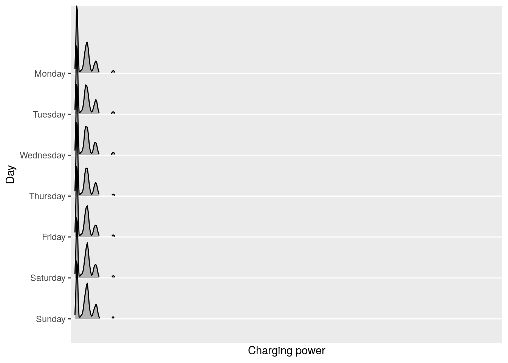

Analysis of electric vehicle usage patterns in New Zealand
Summary Statistical Report
Rafferty Parker and Ben Anderson (University of Otago)
Last run at: 2019-01-30 15:16:34
df <- rawDF # so can always re-create df without having to re-load data
# don't do anything else here to avoid confusion#Combine date and time columns into POSIXct datetime
df$dateTime <- lubridate::as_datetime(paste0(df$date, df$time))
# set correct order for days of the week
df$day_of_week <- ordered(df$day_of_week, levels=c("Monday", "Tuesday", "Wednesday",
"Thursday", "Friday", "Saturday", "Sunday"))
# set charge type
df$chargeType <- ifelse(df$charge_power_kw > 0, "Standard charge", NA)
df$chargeType <- ifelse(df$charge_power_kw >= 7, "Fast charge", df$chargeType)
df$chargeType <- ifelse(is.na(df$chargeType), "Not charging", df$chargeType) # not charging
# set charge type order so charts make sense from left (std) to right (fast)
df$chargeType <- cut(df$charge_power_kw, c(-Inf, 0.01, 7, Inf), labels = c('Not charging', 'Standard charging', 'Fast charging'))
df$chargeType <- factor(df$chargeType, ordered = TRUE)
# Rename vehicle ids to something more user-friendly
df$dvID <- factor(df$id, ordered = TRUE)
levSeq <- seq(1:length(levels(df$dvID)))
levSeqChar <- as.character(levSeq)
df$dvID <- factor(df$dvID,
labels = levSeqChar)
df$dvID <- as.character(df$dvID)
df$dvID <- paste("Vehicle", df$dvID, sep = " ")
names(df)[names(df) == 'state_of_charge_percent'] <- 'SoC_percent'
df$qHour <- hms::trunc_hms(df$time, 15*60) # truncate to previous 15 min
# Month as ordered factor
df$month <- factor(df$month, ordered = TRUE, levels = c("Jan", "Feb", "Mar", "Apr", "May",
"Jun", "Jul", "Aug", "Sep", "Oct",
"Nov", "Dec"))
# Create factor for weekdays/weekends
weekdays1 <- c("Monday", "Tuesday", "Wednesday", "Thursday", "Friday")
df$weekday <- factor((df$day_of_week %in% weekdays1),
levels = c(TRUE, FALSE), labels = c('Weekday', 'Weekend'), ordered = TRUE)
# removal of silly state of charge percentage values
df$SoC_percent[df$SoC_percent > 100] <- NA
df$SoC_percent[df$SoC_percent < 0] <- NA
# removal of silly charge_power_kw values
# "...charging stations are being developed with capacities of 120kW in New Zealand"
# (Concept Consulting report)
df$charge_power_kw[df$charge_power_kw > 120] <- NAdt <- as.data.table(df) # creates a data.table for fast data crunching
dt <- dt[, chargeFlag := ifelse(shift(charge_power_kw) == 0 & charge_power_kw > 0 & shift(charge_power_kw, type = "lead") > 0,
"first", "Not charging"), by = id]
# the previous value was 0 but this value and the next value > 0
dt <- dt[, chargeFlag := ifelse(shift(charge_power_kw) > 0 & charge_power_kw > 0,
"charging", chargeFlag), by = id]
# previous value > 0, this value > 0
dt <- dt[, chargeFlag := ifelse(shift(charge_power_kw == 0, type = "lead") & charge_power_kw > 0 & shift(charge_power_kw) > 0,
"last", chargeFlag), by = id]
# next value = 0, this value and the previous value > 0
dt$chargeFlag <- ordered(dt$chargeFlag, levels=c("first", "charging", "last"))
table(dt$chargeFlag, useNA = "always")##
## first charging last <NA>
## 9478 891085 9487 605762# ATTN BEN - delete following lines if not necessary
#dt <- dt[ , `:=`( chargeCount = .N ) , by = chargeFlag ]
#dt <- dt[, obsDiffTime := difftime(dateTime,shift(dateTime)), by = id] # time since previous observation (within id)
#dt <- dt[, obsDiffSecs := as.numeric(obsDiffTime)] # seconds since previous observation (within id) - could include reset to 0 after midnight
chargingDT <- dt[charge_power_kw > 0] # select just chargingchargeBegins <- chargingDT[chargingDT$chargeFlag == "first" , ]
chargeEnds <- chargingDT[chargingDT$chargeFlag == "last", ]# select the observations which we've flagged as first & last in a sequence of charging
firstLastDT <- dt[chargeFlag == "first" | chargeFlag == "last"]
# flag the first of a pair
firstLastDT <- firstLastDT[, pairOK := ifelse(chargeFlag == "first" & shift(chargeFlag == "last", type = "lead"), "Pair start", NA)]
# flag the second of a pair
firstLastDT <- firstLastDT[, pairOK := ifelse(chargeFlag == "last" & shift(chargeFlag == "first"), "Pair end", pairOK)]
# calculate the time diff between all obs
firstLastDT <- firstLastDT[, pairDuration := difftime(time1 = dateTime, time2 = shift(dateTime), units = c("mins"))]
# we only want the time difference which was calculated for an obs where pairOK == "Pair end". This should also be where chargeFlag == "last" _except_ for where we have no 'first' (e.g. at start of data)
# note that we will still have pairs that bridge 00:00 which will give us -ve values
# if we have a -ve value then we need to change the calculation to add the time
# up to midnight from the start to the time after midnight to the end
firstLastDT <- firstLastDT[pairOK == "Pair start" & shift(pairDuration < 0, type = "lead"),
toMidnight := difftime(time1 = as.hms("23:59:59"), time2 = time)]
firstLastDT <- firstLastDT[pairOK == "Pair end" & pairDuration < 0,
afterMidnight := difftime(time1 = time, time2 = as.hms("00:00:00"), units = c("mins"))]
firstLastDT <- firstLastDT[, pairDurationFix := shift(toMidnight) + afterMidnight]
firstLastDT <- firstLastDT[, pairDurationFinal := ifelse(pairDuration <0,
pairDurationFix,
pairDuration)]
# Remove overly large values
firstLastDT <- firstLastDT[pairDurationFinal < 6000]
# ATTN BEN do we do the following here or disply the plots below that depend on the small values and then remove them for further analysis?
# Remove standard charges of duration less than 8 mins
firstLastDT <- firstLastDT[!(firstLastDT$pairDurationFinal < 8 & firstLastDT$chargeType == "Standard charging"),]
# This removes a disproportionate amount of "first" flags so renders firstLastDT useless for chargeBegin/chargeEnd related analysis.
# Consider removing relevent columns to ensure this doesn't happen
# ATTN BEN rather than specify ...[pairOK == "Pair end", ] for all the following firstLastDT$pairDurationFinal plots, should we just remove all rows that are not "Pair end"?1 Note
Based on and inspired by the UK DoT statistical report 2018.
Data used: /run/user/1001/gvfs/smb-share:server=storage.hcs-p01.otago.ac.nz,share=hum-csafe,user=student%5Cparra358/Research Projects/GREEN Grid/externalData/flipTheFleet/safe/testData/2019_01_25/EVBB_processed_all_v1.0_20180125.csv
Observations: 1515812 Observed charging: 915718 observations (power demand > 0)
2 Data information
2.1 Background
The data consisted of 1515812 data points from 50 vehicles over 8 months (April 2018 - January 2019) derived from FlipTheFleet’s blackbox recorder. The recorder provided measurements at 1 minute frequency of charging behaviour and battery charge state.
The data has been partially anonymised through the hashing of license plate numbers. Due to the possiblilty of the identity of participants being ascertained through other variables, the remaining data is not publically available.
2.2 Cleaning and Preperation
Charging data has been broadly seperated into two seperate catagories, “standard” and “fast”. Standard charging is when the charger is reading less than 7kW - this is considered the upper limit of what can be obtained from a standard home charging scenario without an expensive wiring upgrade[@concept2018]. Fast charging is all charging above 7kW, and would likely occur at designated and purpose-built fast charging stations.
The data was also catagorised according to whether it was a weekday or not. This allows analysis to occur of differing charging patterns between weekdays and weekends, allowing for further accuracy in determining the effects of electric vehicles on grid peaks.
Some instances of charging power greater than 120kW were recorded. These were considered anomolies and discarded, as these exceed the capacity of the highest charging stations available in New Zealand[concept2018].
Instances of battery state of charge being greater than 100% or less than 0% were also discarded.
In order to determine charging durations, rows were flagged as “charging begins” if the charging power was greater than zero and the previous and following row’s charging power were (respectively) equal to zero and greater than zero. Similarly, rows were flagged as “charge ends” if the charging power was greater than zero and the previous and following row’s charging power were (respectively) greater than zero and equal to zero.
Using this method we obtained 9478 instances of charge beginning, and 9487 instances of charge ending. The additional 9 instances of the charge ending than there are of the charge beginning may be due to the first instance of data collection occurring during mid-charge for some vehicles. While it assumed the method by which the duration of charge was determined would accomodate this, two very large charging durations (longer than 100 hours) were calculated. As even a very high capacity vehicle using the slowest standard charger would not take this long to charge from empty, these were assumed to be anomalies and were discarded.
2.3 Definitions:
The capacity of most domestic charging is between 1.8kW to 7kW, whereas charging power above 7kW is available at purpose-built charging stations[@concept2018]. Each charging event was therefore seperated into “Fast” (> = 7kW) and “Standard” (below 7kW).
A charging event was defined as a continuous sequence of 1 minute observations per vehicle when > 0 kW was demand was observed.
For a discussion of data limitations see Section ??.
3 Key Findings:
stdMedian <- median(chargingDT[chargeType == "Standard charging"]$charge_power_kw, na.rm = TRUE)
stdMean <- mean(chargingDT[chargeType == "Standard charging"]$charge_power_kw, na.rm = TRUE)
fastMedian <- median(chargingDT[chargeType == "Fast charging"]$charge_power_kw, na.rm = TRUE)
fastMean <- mean(chargingDT[chargeType == "Fast charging"]$charge_power_kw, na.rm = TRUE)- Power supplied: The median power supplied during a standard charging was 1.78 kW. The mean was slightly lower at 2.11 kW. Fast charging observations had a higher median of 23.35 kW (mean = 27.18);
- Charging duration: Charging durations tended to fall into one of two groups - longer ‘overnight’ charges with a median of XX hours and shorter events during the day both at standard and fast charge rates with a median duration of XX hours.
- Time of Day: charging events were more frequent at specific times of the day and day of the week with more evening and over-night charging during weekdays and more day-time charging at weekends. The power demand also varied according to time of day and day of the week.
4 Observed demand
Figure 4.1 shows the distribution of observed charging kW demand by inferred charge type. This plot shows that fast charges are relatively rare in the dataset whilst standard charges are much more common and, partly due to our definition, are concentrated around 3 kW. At the present time charging at home is likely to be predominatly standard charging whilst charging outside the home is likely to be a mix of the two.
p <- ggplot2::ggplot(chargingDT, aes(x = charge_power_kw, fill = chargeType, binwidth = 0.1)) +
geom_histogram() +
facet_wrap(. ~ chargeType, scales = "free")
# now draw the plot with any fancy extras we want
p + labs(y = "Density",
x = "Power (kW)") +
guides(fill = guide_legend(title = "Charge type:")) +
scale_fill_manual(values=cbgPalette) + # use colour-blind friendly palette
theme(legend.position = "bottom")## `stat_bin()` using `bins = 30`. Pick better value with `binwidth`.
Figure 4.1: Observed power demand distribution by day of the week and charge type where charging observed
stdQT <- quantile(chargingDT[chargeType == "Standard charging"]$charge_power_kw)
fastQT <- quantile(chargingDT[chargeType == "Fast charging"]$charge_power_kw)75% of standard charging observations were 1.46 kW or more but the figure was 16.78 kW or more for fast charging
5 Daily demand
p <- ggplot2::ggplot(filter(dt, chargeType == "Standard charging" | chargeType == "Fast charging"), aes(x = day_of_week, colour = chargeType, group = day_of_week)) +
geom_boxplot(aes(y = charge_power_kw)) +
facet_wrap(. ~ chargeType, scales= "free_y")
p + theme(axis.text.x = element_text(angle = 90, hjust = 1)) +
labs(x = "Day of week",
y = "Power (kW)") +
guides(colour = guide_legend(title = "Charge type:")) +
scale_colour_manual(values=cbgPalette) + # use colour-blind friendly palette
theme(legend.position = "bottom")## Warning: Removed 45 rows containing non-finite values (stat_boxplot).
Figure 5.1: Observed power demand distribution by day of the week and charge type
Figure 5.1 shows the distribution of observed charging kW demand by day of the week. We can see that fast charging varies in demand but standard charging is relatively constant across days.
6 Charging duration
Fig: Histogram of charging event durations (faceted by fast vs standard)
If we assume that the first non-zero charge observation is the ‘start’ and the last non-zero charge observation within the vehicle id is the ‘end’ we can calculate the duration between the two. This assumes there is no missing data.
Figure 6.1 shows the overall distribution of all charging sequences. Clearly there are very small and a few very large values for Standard Charges but this is not the case for Fast charges.
ggplot2::ggplot(firstLastDT[pairOK == "Pair end"],
aes(x = pairDurationFinal)) +
geom_histogram(binwidth = 5) +
facet_wrap(chargeType ~ ., scales = "free") +
labs(x = "Minutes")Figure 6.1: Duration of charging sequences
Table 6.1 shows the overall distributions and indicates the extent to which the means are skewed by the very small and a few very large values shown in Figure 6.1.
t <- firstLastDT[pairOK == "Pair end",
.(N = .N,
mean = mean(pairDurationFinal),
median = median(pairDurationFinal),
min = min(pairDurationFinal),
max = max(pairDurationFinal)),
keyby = .(chargeType)]
kableExtra::kable(t,
caption = "Duration of all charge sequences by charge type (minutes)", digits = 2) %>%
kable_styling()| chargeType | N | mean | median | min | max |
|---|---|---|---|---|---|
| Standard charging | 3403 | 204.93 | 176.60 | 8.00 | 876.67 |
| Fast charging | 593 | 13.03 | 11.88 | 0.32 | 48.78 |
Figure 6.2 shows the distribution of very short charging sequences which are likely to be ‘top-ups’ occuring towards the end of a longer charging period. As we can see these appear to be generally less than 8 minutes in length for Standard Charges.
ggplot2::ggplot(firstLastDT[pairOK == "Pair end" & pairDurationFinal < 10],
aes(x = pairDurationFinal)) +
geom_histogram(binwidth = 1) +
facet_grid(chargeType ~ .) +
labs(x = "Minutes")Figure 6.2: Duration of charging sequences < 10 minutes
Table 6.2 shows the same descriptive statistics but for all sequences of greater than 8 minute duration. Now we can see that the mean and median durations for Standard Charge sequences are closer at 130 - 140 minutes.
t <- firstLastDT[pairOK == "Pair end" & pairDurationFinal > 8,
.(N = .N,
mean = mean(pairDurationFinal),
median = median(pairDurationFinal),
min = min(pairDurationFinal),
max = max(pairDurationFinal)),
keyby = .(chargeType)]
kableExtra::kable(t,
caption = "Duration of charge sequences > 8 minutes by charge type (minutes, )", digits = 2) %>%
kable_styling()| chargeType | N | mean | median | min | max |
|---|---|---|---|---|---|
| Standard charging | 3402 | 204.99 | 176.64 | 8.02 | 876.67 |
| Fast charging | 417 | 16.64 | 15.18 | 8.05 | 48.78 |
Figure 6.3 shows the distribution of long (> 8 minutes) charging sequences. As we can see these appear to be generally less than 3 hours in length for Standard Charges.
ggplot2::ggplot(firstLastDT[pairOK == "Pair end" & pairDurationFinal > 8 & pairDurationFinal < 6000],
aes(x = pairDurationFinal)) +
geom_histogram(binwidth = 20) +
facet_grid(chargeType ~ ., scales = "free") +
labs(x = "Minutes")Figure 6.3: Duration of charging sequences > 8 minutes
6.1 Duration by time of day
ggplot2::ggplot(firstLastDT[pairOK == "Pair end" & pairDurationFinal > 8 & pairDurationFinal < 6000],
aes(x = qHour, y = pairDurationFinal, group = qHour)) +
geom_boxplot() +
facet_grid(chargeType ~ ., scales = "free") +
labs(x = "Time of Day",
y = "Minutes")Figure 6.4: Duration by time of charging start for sequences > 8 minutes
plotDT <- firstLastDT[pairOK == "Pair end" & pairDurationFinal > 8,
.(meanDuration = mean(pairDurationFinal)),
keyby = .(qHour, chargeType)]
ggplot2::ggplot(plotDT,
aes(x = qHour, y = meanDuration, colour = chargeType)) +
geom_point() +
labs(x = "Time of Day",
y = "Minutes")Figure 6.5: Mean duration (within quarter hours) by time of charging start for sequences > 8 minutes
kableExtra::kable(t, caption = "Mean duration of charge events by charge type")| chargeType | N | mean | median | min | max |
|---|---|---|---|---|---|
| Standard charging | 3402 | 204.99240 | 176.64167 | 8.016667 | 876.66667 |
| Fast charging | 417 | 16.63513 | 15.18333 | 8.050000 | 48.78333 |
plotDT <- firstLastDT[pairOK == "Pair end", .(meanDuration = mean(pairDurationFinal, na.rm = TRUE)), keyby = .(chargeType, dateTime)]Discuss any other patterns
What was the research question? :-)
7 Time of charging
plotDT <- chargingDT[, .(count = .N), keyby = .(qHour, chargeType, day_of_week)]
# make a weekend facet label
plotDT <- plotDT[, weekEnd := "Weekend"]
plotDT <- plotDT[day_of_week != "Saturday" & day_of_week != "Sunday", weekEnd := "Week day"]
p <- ggplot2::ggplot(plotDT, aes(x = qHour, y = count, colour = day_of_week)) +
geom_line() +
facet_grid(weekEnd ~ chargeType, scales = "free_y")
p + theme(axis.text.x = element_text(angle = 90, hjust = 1)) +
labs(x = "Time of day",
y = "Count") +
guides(colour = guide_legend(title = "Day of week:")) +
scale_colour_manual(values=cbgPalette) + # use colour-blind friendly palette
theme(legend.position = "bottom")
Figure 7.1: Count of observed charging events by type, day of week and time
Figure 7.1 shows the distribution of observed charging by time of day and day of the week. Aggregating counts in this way emphasises the times at which charging most commonly occurs and we can see…
Fig: profile of median charging demand by time of day and day of the week faceted by at home vs not at home
Charging demand varies somewhat by time of day and day of the week. Weekdays show … whilst weekends show. Saturdays and Sundays vary with…
p <- ggplot2::ggplot(subset(df, chargeType %in% "Standard charging"),
aes(x = qHour, group = qHour, y = charge_power_kw)) +
theme(legend.position = "bottom", axis.text.x = element_text(angle = 90)) +
scale_colour_manual(values=cbbPalette) + # use colour-blind friendly palette
geom_boxplot() # <- make the plot in an object first
p + labs(x = "Time of Day", y = "Power (kW)", caption = "Boxplot of daily standard charging demand")Figure 7.2: Boxplot of charging timing by charge rate
ggplot(df,aes(x=charge_power_kw, y=forcats::fct_rev(day_of_week))) +
geom_density_ridges(rel_min_height = 0.01) + # removes tails
scale_x_discrete(expand = c(0.01, 0)) + # removes cutoff top
labs(x="Charging power",y="Day")## Picking joint bandwidth of 0.11## Warning: Removed 45 rows containing non-finite values
## (stat_density_ridges).
p <- ggplot2::ggplot(subset(dt, chargeType %in% "Fast charging"),
aes(x = qHour, group = qHour, y = charge_power_kw)) +
theme(legend.position = "bottom", axis.text.x = element_text(angle = 90)) +
scale_colour_manual(values=cbbPalette) + # use colour-blind friendly palette
geom_boxplot() # <- make the plot in an object first
p + labs(x = "Time of Day", y = "Power (kW)", caption = "Boxplot of daily fast charging demand")## Warning: Removed 45 rows containing non-finite values (stat_boxplot).Figure 7.3: Boxplot of charging timing by charge rate
p <- ggplot2::ggplot(dt, aes(x = qHour, group = qHour, y = charge_power_kw)) +
guides(colour = guide_legend(title = "Vehicle:")) +
theme(legend.position = "bottom", axis.text.x = element_text(angle = 90)) +
scale_colour_manual(values=cbbPalette) +
geom_boxplot()
p + labs(x = "Time of Day", y = "Power (kW)")## Warning: Removed 45 rows containing non-finite values (stat_boxplot).Figure 7.4: Boxplot of charging timing
ggplot(chargeBegins,aes(x=qHour, y= forcats::fct_rev(day_of_week))) +
geom_density_ridges(rel_min_height = 0.01) + # removes tails
scale_x_discrete(expand = c(0.01, 0)) + # removes cutoff top
labs(x = "Hour", y = "Day") ## Picking joint bandwidth of 5700Figure 7.5: Time charging begins
# Not sure how to get time on x axis (or if I want to)
# ATTN BEN I don't think this joy plot gives any more information than we get from the following 2 density plots. Delete this entire block if you agree.p <- ggplot(chargeBegins[chargeBegins$weekday == "Weekday", ], aes(x = qHour, fill = chargeType)) +
geom_density(alpha = 0.3)
facet_grid(~weekday)## <ggproto object: Class FacetGrid, Facet, gg>
## compute_layout: function
## draw_back: function
## draw_front: function
## draw_labels: function
## draw_panels: function
## finish_data: function
## init_scales: function
## map_data: function
## params: list
## setup_data: function
## setup_params: function
## shrink: TRUE
## train_scales: function
## vars: function
## super: <ggproto object: Class FacetGrid, Facet, gg>p + labs(x = "Time", fill = "Charge type")Figure 7.6: Density plot of charging start times during weekdays
p <- ggplot(chargeBegins[chargeBegins$weekday == "Weekend", ], aes(x = qHour, fill = chargeType)) +
geom_density(alpha = 0.3)
p + labs(x = "Time", fill = "Charge type")Figure 7.7: Density plot of charging start times during weekends
p <- ggplot(chargeEnds[chargeEnds$weekday == "Weekday", ], aes(x = qHour, fill = chargeType)) +
geom_density(alpha = 0.3)
p + labs(x = "Time", fill = "Charge type" )Figure 7.8: Density plot of charging end times during weekdays
p <- ggplot(chargeEnds[chargeEnds$weekday == "Weekend", ], aes(x = qHour, fill = chargeType)) +
scale_colour_manual(values=cbbPalette)+
geom_density(alpha = 0.3) +
facet_grid(~weekday)
p + labs(x = "Time", fill = "Charge type")Figure 7.9: Density plot of charging end times during weekends
At home charging events tended to begin at HH:MM during weekdays and HH:MM at weekends. We can get “Slow” charging events rather than “home”
Standard charging has a noticeably different profile to charging patterns for fast charges. It suggests that it is common for plug-in vehicle owners to charge overnight at home, and perhaps use the more powerful public chargepoints to top up during the day.
Discuss any other patterns
8 State of charge
The duration of charging events (see Section 6) suggests that EVs may be ‘plugged in’ at home (and elsewhere) for considerable durations.
p <- ggplot(data=chargeBegins, aes(chargeBegins$SoC_percent)) + geom_histogram(bins = 10)
p + labs(x = "State of charge when charging begins (%)")## Warning: Removed 1 rows containing non-finite values (stat_bin).
ggsave("~/EVBB/plots/SOC_when_charging_begins.png")## Saving 7 x 5 in image## Warning: Removed 1 rows containing non-finite values (stat_bin).Fig: Distribution of state of charge when evening charge event starts ‘at home’ (histogram (or joy plot) by day of week) 
The figure shows that many vehicles arrive home with greater than 50% charge remaining and would therefore be able to transfer energy to the home during the evening grid peak as a form of demand response.
Fig: Mean state of battery charge at the first ‘at home’ charging observation by hour and day of the week No “at home” data with SOC
should show the timing of ‘coming home’ battery state?
Fig: Distribution of duration of charge events starting ‘at home’ in the evening (by day of the week) Duration difficult to accurately determine without date due to charging occurring through the night
The figure shows that vehicles may then be available for further demand response and/or re-charging for up to XX hours from this point.
Discuss any other patterns